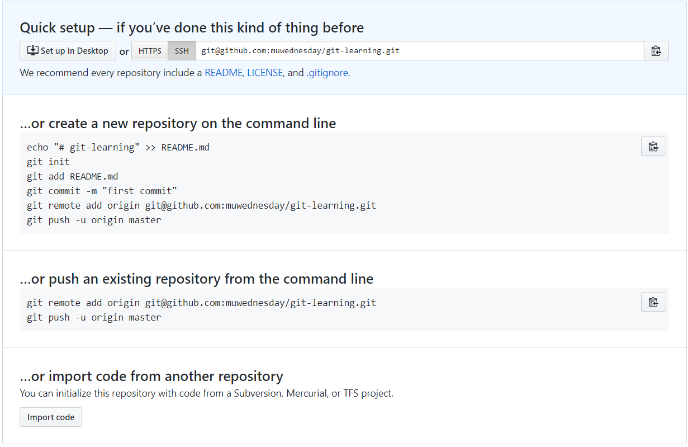

Git is a free and open source distributed version control system designed to handle everything from small to very large projects with speed and efficiency.
Git 是一个开源的分布式版本控制系统，用于敏捷高效地处理任何或小或大的项目。它是由 Linux 之父 Linus Torvalds 为了帮助管理 Linux 内核开发而开发的一个开放源码的版本控制软件。本文介绍了 Git 的常用命令。
三种状态
在学习 Git 命令之前，首先要理解它的三种状态：已提交（committed）、已修改（modified）和已暂存（staged）。已提交表示数据已经安全的保存在本地数据库中；已修改表示修改了文件，但还没保存到数据库中，增加、删除文件也相当于已修改；已暂存表示对一个已修改文件的当前版本做了标记，使之包含在下次提交的快照中。
由此引入 Git 项目的三个工作区域的概念：Git 仓库、工作目录以及暂存区域。

它们之间的关系可以参考 Git 工作区、暂存区和版本库。
在阅读下面的内容之前，最好在自己的电脑上安装 Git，然后按照顺序操作。如果你想先感受一下 Git 的魅力， Try Git 是一个不错的选择。
Git 配置
安装完 Git，初次运行前需要做一些配置，比如用户信息：
1 | git config --global user.name "Your Name" |
Windows 环境下，推荐使用文本编辑器 Notepad++：
1 | # 注意更改为自己的安装目录 |
配置完成后，可以通过 git config --list 查看所有的配置信息，或者使用 git config user.name 查看单个信息。
另外，还可以自定义配置一些命令的别名，方便记忆。
1 | git config --global alias.last 'log -1' |
这样 git last 就相当于 git log -1，用于查看最后一次的提交记录。我比较喜欢这样配置，用于查看提交历史：
1 | git config --global alias.lg "log --oneline --decorate --graph --all" |
创建版本库
创建版本库有两种方式，一种是使用 git clone 从现有 Git 仓库中拷贝项目，格式如下：
1 | git clone <repo> <directory> |
另一种是通过 git init 初始化一个 Git 仓库，省略 directory 会在当前文件夹中创建。
1 | git init <directory> |
例如，在 D:\test 文件夹下执行 git init 命令，这样会生成一个 隐藏 的 .git 目录。
1 | $ git init |
Git 工作流程
基本的 Git 工作流程如下：
在工作目录中修改文件。
暂存文件，将文件的快照放入暂存区域。
提交更新，找到暂存区域的文件，将快照永久性存储到 Git 仓库目录。
使用 Git 时文件的生命周期如下：

上图来源于 Pro Git，这里的 Add the file 应该理解为使用 git add 命令，Reomve the file 则是手动删除文件。
First Commit
在 D:\test 中手动添加 a.txt 文件，使用 Notepad++ 编辑（不要用记事本），然后运行 git status 命令，查看当前状态：
1 | $ git status |
Git 的提示十分人性化，可以看出 a.txt 处于 Untracked 状态。执行 git add 命令：
1 | $ git add a.txt |
此时 a.txt 处于 Staged 状态，可以通过 git rm --cached <file>... 使其回到 Untracked 状态。最后执行 git commit 命令，进行第一次提交。
1 | $ git commit -m "Add a.txt" |
其中 -m 是参数，后面跟着提交信息。如果配置了文本编辑器，执行不带参数的 git commit 后，可在弹出的编辑器中填写提交信息。注意只有 保存文件 并 退出编辑器，commit 才会生效。
另外，在只 修改文件 时，使用 -a 可以跳过 Staged 状态直接提交，可以和 -m 一起使用：
1 | git commit -am "Update file" |
Second Commit
添加 b.txt，然后修改 a.txt，查看此时的状态：
1 | $ git status |
此时 a.txt 处于 Modified 状态，可通过 git checkout -- <file>... 放弃更改，但是要 慎用，这些更改是找不回来的。 而 b.txt 处于 Untracked 状态。
git diff 命令用于比较工作目录中当前文件和暂存区域快照之间的差异，也就是修改之后还没有暂存起来的变化内容。
git diff --cached（Git 1.6.1 及更高版本还允许使用 git diff --staged，效果是相同的，但更好记些）可以查看已暂存的将要添加到下次提交里的内容。
1 | $ git diff |
添加这两个文件到暂存区：
1 | $ git add "*.txt" # git add .(一个点，表示添加所有文件) |
同理，git reset HEAD <file>... 命令可使文件回到 add 之前的状态。此时再次执行 diff：
1 | $ git diff # nothing |
以上对比可以看出不同 diff 的差别。执行 commit 命令进行第二次提交：
1 | $ git commit -m "Update a.txt and add b.txt" |
删除
为了演示删除操作，先添加 c.txt：
1 | $ git add c.txt |
手动删除后的状态为 Untracked。
1 | $ git status |
使用 git checkout -- <file>... 撤销，然后执行 git rm 命令，此时的状态为 Staged。这就是两者的差别吧。
1 | $ git rm c.txt |
提交删除：
1 | $ git commit -m "Delete c.txt" |
如果删除之前修改过并且已经放到暂存区域的话，则必须要用强制删除 git rm -f <file>。 这是一种安全特性，用于防止误删还没有添加到快照的数据，这样的数据不能被 Git 恢复。
而 git rm --cached 命令只会将文件从 Git 仓库中删除，但仍然保留在当前工作目录中。当你忘记添加 .gitignore 文件，不小心把一个很大的日志文件或一堆无关的文件添加到暂存区时，这一做法尤其有用。
版本回退
在 Git 中，用 HEAD 表示当前版本，上一个版本就是 HEAD^（HEAD~）。有关 ~ 和 ^ 的区别，请参考 What’s the difference between HEAD^ and HEAD~ in Git?
注意，Windows 环境下 ^ 识别不了，必须加 双引号 才行，像这样 "HEAD^"。
假如又要用到 c.txt，想反悔，怎么办？Git 允许我们在版本的历史之间穿梭，使用 git reset --hard <commit_id> 命令。如果不知道 commit_id，git log 可以查看提交历史。
1 | $ git lg # 自定义的 git log |
其中 3fbc25c 为版本号（commit_id），它是一个由 SHA-1 计算出来的校验和，用十六进制表示，而且每次都不一样。因为我使用了自定义的 git lg， 这里只显示 7 位，其实它是 3fbc25c7d58e06169a45b587a9c6164234efd43c。
git log 功能十分强大，可参考 Git Basics - Viewing the Commit History。
另外，可以使用命令 git reflog 查看命令历史。如果想回到 Delete c.txt 的版本，直接 reset 对应的 commit_id 即可。
1 | $ git reflog |
Reset
其实 reset 分三类，分别为 --soft、--mixed（默认，可不加）和 --hard，它们之间到底有什么区别呢？我们做个试验。注意此时是 Add c.txt 的版本。
soft
1 | $ git reset --soft HEAD~ |
--soft 参数使文件回到了 Staged 的状态。
mixed
重新回到 Add c.txt 的版本，执行 --mixed 命令：
1 | $ git reset --mixed HEAD~ |
--mixed 参数使文件回到了 Untracked 状态。
hard
重新回到 Add c.txt 的版本，执行 --hard 命令：
1 | $ git reset --hard HEAD~ |
而 --hard 参数直接回到了上一个版本。
想要了解更多关于 Reset 的知识，请参考 Git Tools - Reset Demystified。
Git 分支
几乎每一种版本控制系统都以某种形式支持分支。使用分支意味着你可以从开发主线上分离开来，然后在不影响主线的同时继续工作。
有人把 Git 的分支模型称为它的“必杀技特性”，也正因为这一特性，使得 Git 从众多版本控制系统中脱颖而出。为何 Git 的分支模型如此出众呢？Git 处理分支的方式可谓是难以置信的轻量，创建新分支这一操作几乎能在瞬间完成，并且在不同分支之间的切换操作也是一样便捷。
下面演示了 Git 分支的工作流程。创建并切换到 dev 分支：
1 | $ git branch dev |
简单地，这两个命令可以合并为一个命令：
1 | $ git checkout -b dev |
在 dev 分支添加 d.txt，修改 c.txt，提交：
1 | $ git add . |
切换到 master 分支，合并 dev 分支：
1 | $ git checkout master |
最后删除 dev 分支：
1 | $ git branch -d dev |
Git 远程仓库
为了能在任意 Git 项目上协作，需要知道如何管理自己的远程仓库。远程仓库是指托管在因特网或其他网络中的你的项目的版本库。 你可以有好几个远程仓库，通常有些仓库对你只读，有些则可以读写。与他人协作涉及管理远程仓库以及根据需要推送或拉取数据。
这里以 GitHub 为例，演示如何使用远程仓库。在 GitHub 上创建一个新的 Repository，不要添加任何内容，完成后如下图所示：

添加远程仓库：
1 | git remote add origin git@github.com:muwednesday/git-learning.git |
使用命令 git push 将本地仓库推送到 GitHub，其中 -u 为设置当前本地分支的默认远程分支。
1 | $ git push -u origin master |
刷新页面后即可看到文件。然后在 GitHub 上创建一个 README.md 的文件，提交。
返回本地仓库，查看状态，这里居然显示 up to date。本来应该落后才对，为什么呢？原因参见 Why does git status show branch is up-to-date when changes exist upstream?
1 | $ git status |
最后使用命令 git pull 来自动的抓取然后合并远程分支到当前分支。
1 | $ git pull |